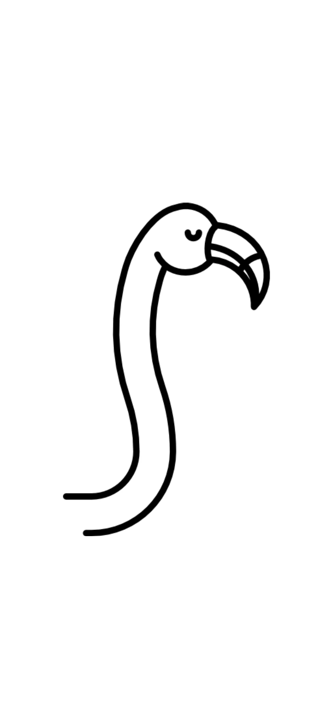
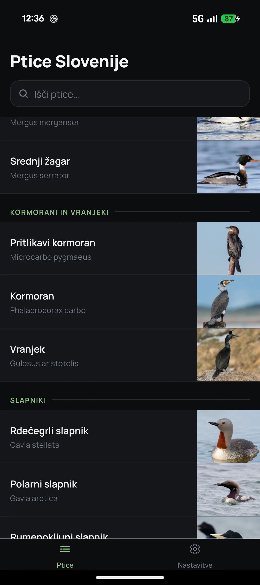
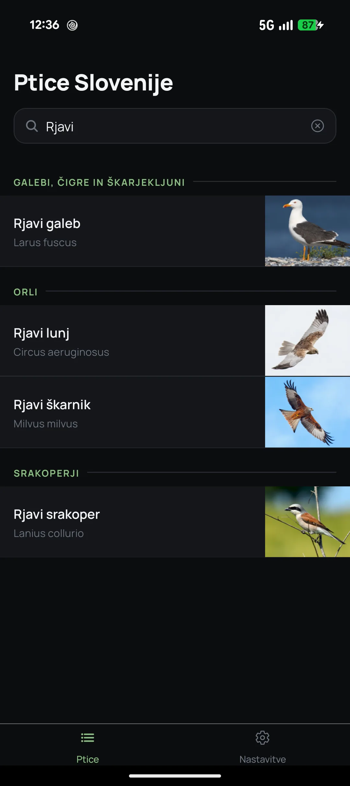
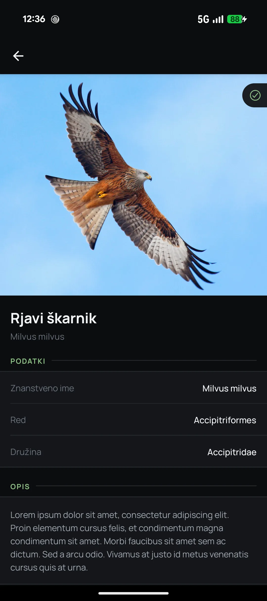
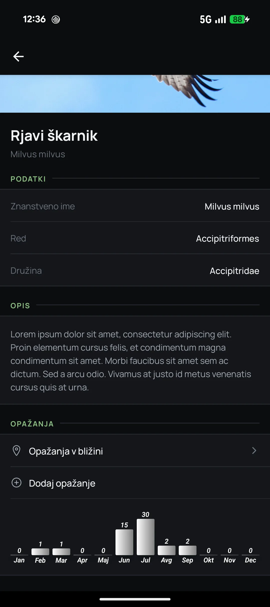
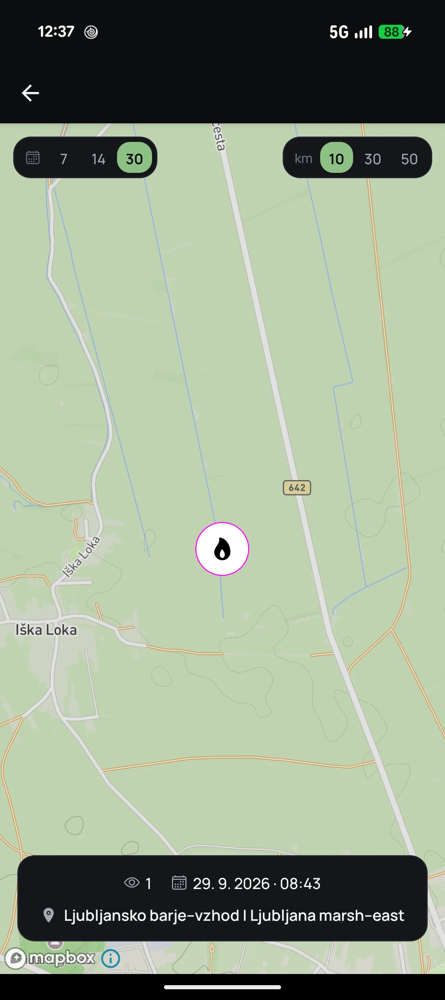
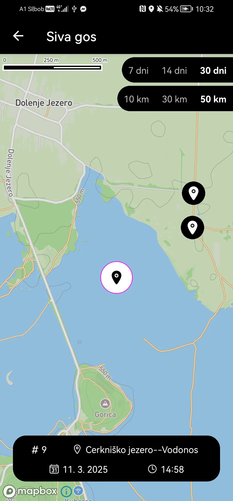
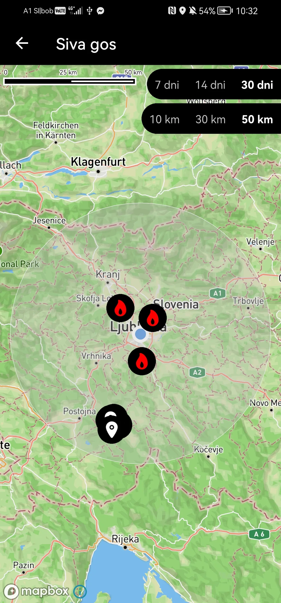

Mobile app
Birds
discover the birds around you
01 About
When I was around 8 years old I saw a book about birds in a local bookstore and asked my parents to buy it. I liked the book but didn't actually know these birds live around us so I kinda forgot about it. Fast forward ~ 10 years later COVID-19 comes in play and as I live in a pretty rural area I started hiking a lot and observing nature around me. Then I found out about a website called e-bird, where users can post bird sightings and decided to try it but I didn't like how complex it is and I hated the fact that I basically needed 3 different mobile apps for it to be helpful. So I decided to build a simpler version using their free API endpoints.
02 Stack
- Core
- Expo (React Native)Express.jsMongoDB
- Maps platform
- Mapbox
- Data
- e-bird platform
03 Features
- Connecting to e-bird
- Discovering and searching birds by taxonomy
- Explore selected bird details
- Explore nearby sightings in last x days by species
- See yearly graphs of sightings*
- Add a sighting*
Now I can easily track e-bird sightings in my area, with future plans to track my own sightings with different charts.
App gallery
Swipe or click to enlarge







